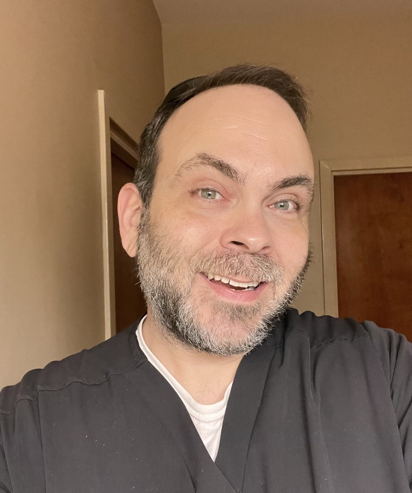

Brock Harris
West Monroe, Louisiana
brockharris@gmail.com
(318) 348-2460
Summary/Objective
Actively employed nurse (LPN) with an unencumbered Louisiana license.
Have several years’ experience in managing the direct care of patients in varied settings
(medical/surgical, telemetry, psychiatric/mental health, adult outpatient clinic, geriatric care/long term,
skilled care, and hospice care).
Graduate with a Bachelor of Science in Business. Have earned certifications via CompTIA for Information Technology related areas.
Education currently focused on
learning front-end and back-end web development. Obtained professional degree to complement robust and
diverse work history. Objective is to transition from the
healthcare setting to a web developer position.
Education
Western Governors University
Salt Lake City, UT
Bachelor of Science, Business – Healthcare Management
October 2017 - January 2021
(Recipient of WGU Excellence Award, March 2018)
Louisiana Delta Community College
Monroe, LA
Practical Nursing Program
August 2012 - December 2013
Professional Experience
Ridgecrest Community Care Center
West Monroe, LA
LPN, Long-term Care, Skilled Care, Hospice Care
May 2018 – Present
- Management of direct patient care for long-term care residents, short-term skilled care residents, and hospice care residents
- Integral part of interdisciplinary team of physicians, MDS coordinators, physical and occupational therapists in reviewing efficacy of current care methods
and implementation of changes to patient care plans and treatment methods
- Accurate, thorough documentation of rendered care and of significant findings or incidents occurring throughout duration of workday
- Delegation of appropriate tasks to Nursing Assistants where necessary
- Other experience includes medication and treatment administration, physical and mental assessments, wound care, basic life support/CPR in deteriorating patients
CDF Healthcare of Louisiana
Delhi, LA
LPN, Community/Behavioral/Mental Health Nursing
March 2016 - May 2018
- Management of medical care for mentally ill and developmentally disabled adults in the group home and semi-independent living settings
- Supervision of direct care workers in their care of clients in the homes
- Thorough documentation and reconciliation of client medical records for accuracy and ease of reference during periodic surveys conducted by
Department of Health & Human Services
- Proactive scheduling and coordination of client physician appointments and transportation to ensure punctuality and continuity of care for clients
- Other areas of experience included physical and mental assessments of clients, blood draws for lab orders, medication administration, minor treatments, and wound care
University Health Conway
Monroe, LA
LPN, Medical/Surgical, Telemetry, Outpatient Clinic
February 2014 - March 2016
- Direct care of pre-operative and post-operative hospitalized patients
- Astute monitoring of telemetry patients admitted for cardiac related diagnoses
- Thorough documentation and data collection of admitted patients and outpatient clinic patients to provide comprehensive record of care
- Medication and treatment administration, physical assessments, wound care
Opus Broadcasting, LLC
Monroe, LA
Production Manager, Program Supervisor, Engineer, On Air Personality
March 2007-August 2011
- The prompt and quality execution of production orders for radio advertisements for the four radio stations at Opus Broadcasting
- Delegation of production orders to other staff as needed
- Technically proficient in monitoring satellite feeds for syndicated programming and troubleshooting in collaboration with engineer when issues arise
- In studio board operation for normal programming and special live events
- On-air personality for two of the area’s highest rated stations
Military Service
United States Air Force
Beale Air Force Base, CA
Senior Airman/Crew Chief
Active duty, November 2001-November 2005
- Phased inspection and maintenance of the U-2 Reconnaissance Aircraft
- Support of training missions stateside and real-world missions in the Middle East
- Supervision of lower ranking Airmen
- Veteran of Operations Iraqi Freedom and Enduring Freedom
- (Military commendations include National Defense Service Medal,
Global War on Terrorism Expeditionary Medal, Global War on Terrorism Service Medal,
Air Force Outstanding Unit Award, Air Force Good Conduct Medal)
References found here.